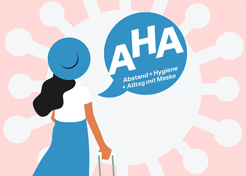
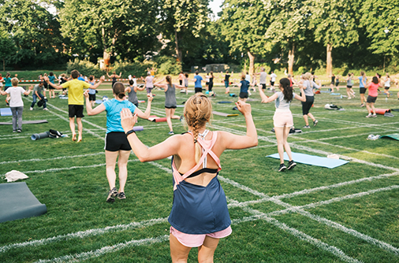
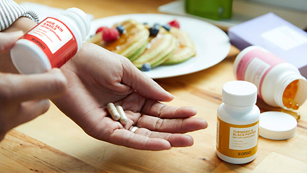
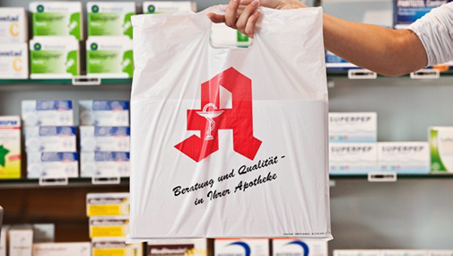

COVID-19 (Coronavirus)
Unser Ladengeschäft ist weiterhin geöffnet.
Wie bitten um
Einhaltung der
Allgemeinen Hygieneregeln AHA,
an
unserem Eingang finden Sie einen Desinfektionsmittelspender.
Nutzen Sie unseren neuen
Medikamentereservierung Service um ihre Produkte möglichst kontaktlos zu erhalten.
Auf dieser Webseite der Stadt Mannheim finden Sie
umfassende
Informationen.


NEU: Digitaler Impfnachweis
Wir erstellen Ihnen einen QR-Code zur Nutzung der CovPass-App. Sie benötigen Ihren Personal- sowie und
Ihren
Impfausweis,
sprechen Sie einfach mit einem Mitarbeiter in unserer Filiale. Nutzen Sie gerne bei
Fragen
auch
unser Kontaktformular.
Geänderte Öffnungszeiten
Liebe Kunden, ab 01. Juli 2021 haben wir geänderte Öffnungszeiten!
| Montag | 08:00-12:00;13:00-20:00 |
| Dienstag | 08:00-12:00;13:00-20:00 |
| Mittwoch | 08:00-12:00;13:00-20:00 |
| Donnerstag | 08:00-12:00;13:00-20:00 |
| Freitag | 08:00-12:00;13:00-18:00 |
| Samstag | 08:00-12:00;13:00-16:00 |
| Sonntag | Ruhetag |

Sport im Park: kostenloses Sportangebot der Stadt
Seit 16. Juni bietet die Stadt Mannheim wieder "Sport im Park" an, ein frei zugängliches und
unverbindliches
Angebot,
welches jeden Abend unterschiedliche Sportarten im Unteren Luisenpark bietet.
Die
Teilnehmerzahl
ist
momentan noch beschränkt, eine Anmeldung ist nötig.
Weitere Informationen auf der
Website.

Lesetipp: Wie sinnnvoll sind Nahrungsergänzungsmittel?
Nahrungsergänzungsmittel scheinen in den letzten Jahren einen neuen Boom erlebt zu haben,
Firmen
bewerben
nun auch bewusst junge Menschen auf Social Media Platformen. Sie versprechen bessere Haut,
gesündere
Haare
und sollen beim Abnehmen helfen. Doch wie sinnvoll sind sie wirklich?
Link
zum Artikel

NEU: Online Medikamentereservierung
Mit Beginn der Pandemie 2020 überlegte sich die Quadrate Apotheke einige Konzepte zur Gewährleistung der
Hygiene
unseres Geschäfts. Wie bieten Ihnen nun auch die Möglichkeit auf dieser Website einen Termin
zur
Abholung
ihrer Rezeptpflichtigen Medikamente zu buchen, um Wartezeiten und den Kontakt zu anderen
Menschen
zu reduzieren.
Hier gehts zur Abholung